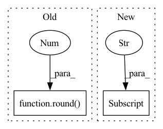

Pattern ID :15463

Before Change
def avg(self):
for key, row in self._data.iterrows():
self._data.average[key] = round(row["total"] / row["counts"], 5)
def current(self):
return dict(self._data.current)
After Change
def avg(self):
for key, row in self._data.iterrows():
self._data.at[key, "mean"] = row["sum"] / row["counts"]
self._data.at[key, "square_avg"] = row["square_sum"] / row["counts"]
def std(self):
for key, row in self._data.iterrows():
self._data.at[key, "std"] = sqrt(row["square_avg"]-row["mean"]**2 + smooth)
In pattern: SUPERPATTERN
Frequency: 3
Non-data size: 2
Instances
Fragment ID: 52540689
Project Name: deeperlearner/pytorch-template
Commit Name: 662aa3e639fc5ff861fc47d269afc1fcd379973d
Time: 2021-01-31
Author: b04202035@g.ntu.edu.tw
File Name: model/metric.py
M Class Name: MetricTracker
N Class Name: MetricTracker
M Method Name: avg(1)
N Method Name: avg(1)
M Parent Class:
N Parent Class:
M File Name: model/metric.py
N File Name: model/metric.py
M Start Line: 25
M End Line: 26
N Start Line: 34
N End Line: 36
'>
Before Change
optim.zero_grad()
batch_idx = 0
Bar.suffix = "{:4}/{:4} | loss: {:1.5f}, time: {}.".format(i, num_iter, round(float(loss_count / i), 5), round(time.time() - st, 3))
bar.next()
bar.finish()
After Change
// Loading model
config, model, optim, sche, model_loss, saver = load_framework(net_name)
config["batch"] = config["batch"] // config["ave_batch"]
print(sorted(config.items()))
'>
Fragment ID: 52540691
Project Name: moothes/salod
Commit Name: fff7e46590aa2dd914c994745a4c52a9e7b243f3
Time: 2022-05-15
Author: zhouhuajun123@126.com
File Name: train.py
M Class Name: AnonimousClass
N Class Name: AnonimousClass
M Method Name: main(0)
N Method Name: main(0)
M Parent Class:
N Parent Class:
M File Name: train.py
N File Name: train.py
M Start Line: 51
M End Line: 106
N Start Line: 28
N End Line: 118
'>
Before Change
self.true_labels = list([data.label_list[idx] for idx in y_true])
if mode == "eval":
close_pro = round((len(y_pred[y_pred != -1]) / len(y_pred))*100, 2)
return close_pro
elif mode == "test":
cm = confusion_matrix(y_true,y_pred)
After Change
if mode == "eval":
cm = confusion_matrix(y_true, y_pred)
eval_score = F_measure(cm)["F1-score"]
return eval_score
elif mode == "test":
'>
Fragment ID: 52540698
Project Name: thuiar/adaptive-decision-boundary
Commit Name: b36006cacdee94b917e8703141df68d1ab101ed1
Time: 2021-02-20
Author: zhang-hl20@mails.tsinghua.edu.cn
File Name: ADB.py
M Class Name: ModelManager
N Class Name: ModelManager
M Method Name: evaluation(4)
N Method Name: evaluation(4)
M Parent Class:
N Parent Class:
M File Name: ADB.py
N File Name: ADB.py
M Start Line: 67
M End Line: 74
N Start Line: 67
N End Line: 75